A 2016-2019 performance review of sales, profitability, and operational efficiency.
How is sales performance evolving over time?
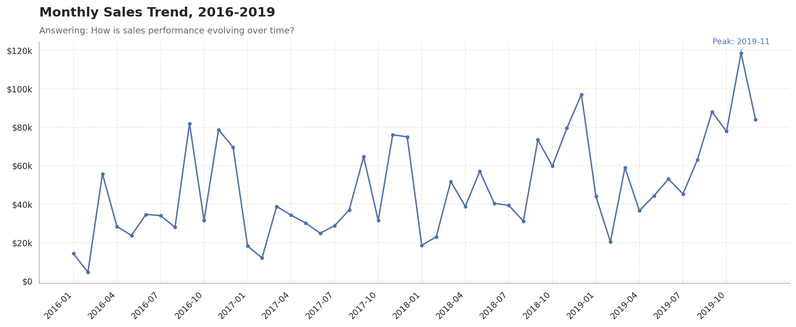
How is profit evolving over time?
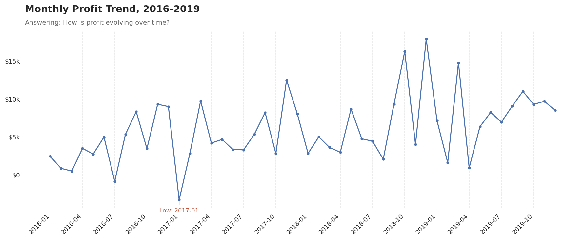
Which categories generate the most revenue and profit?
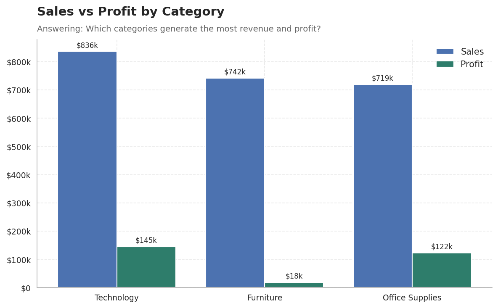
| Category | Sales | Profit | Order Count | Profit Margin |
|---|---|---|---|---|
| Furniture | $742.0k | $18.5k | 1764 | 2.5% |
| Office Supplies | $719.0k | $122.5k | 3742 | 17.0% |
| Technology | $836.2k | $145.5k | 1544 | 17.4% |
Which regions perform best?
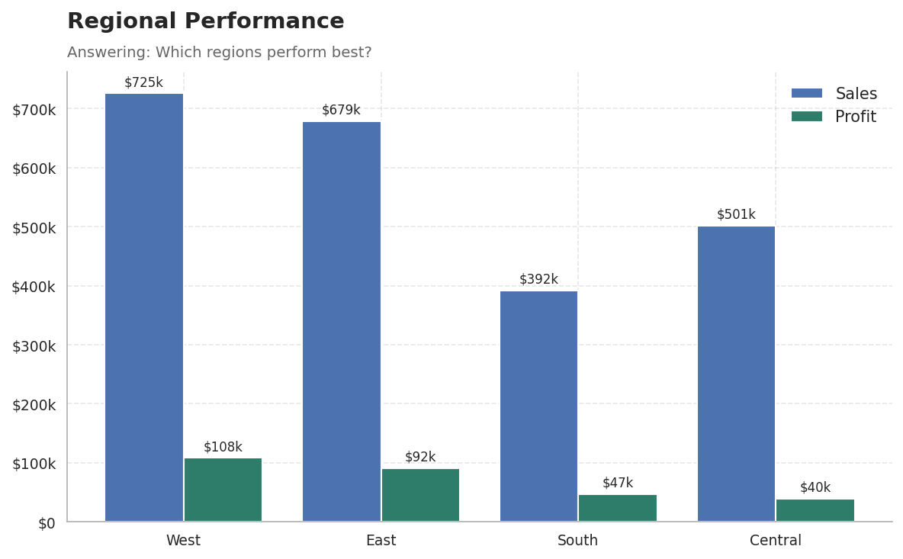
| Region | Sales | Profit | Order Count | Profit Margin |
|---|---|---|---|---|
| Central | $501.2k | $39.7k | 1175 | 7.9% |
| East | $678.8k | $91.5k | 1401 | 13.5% |
| South | $391.7k | $46.7k | 822 | 11.9% |
| West | $725.5k | $108.4k | 1611 | 14.9% |
Which sub-categories are profitable or loss-making?
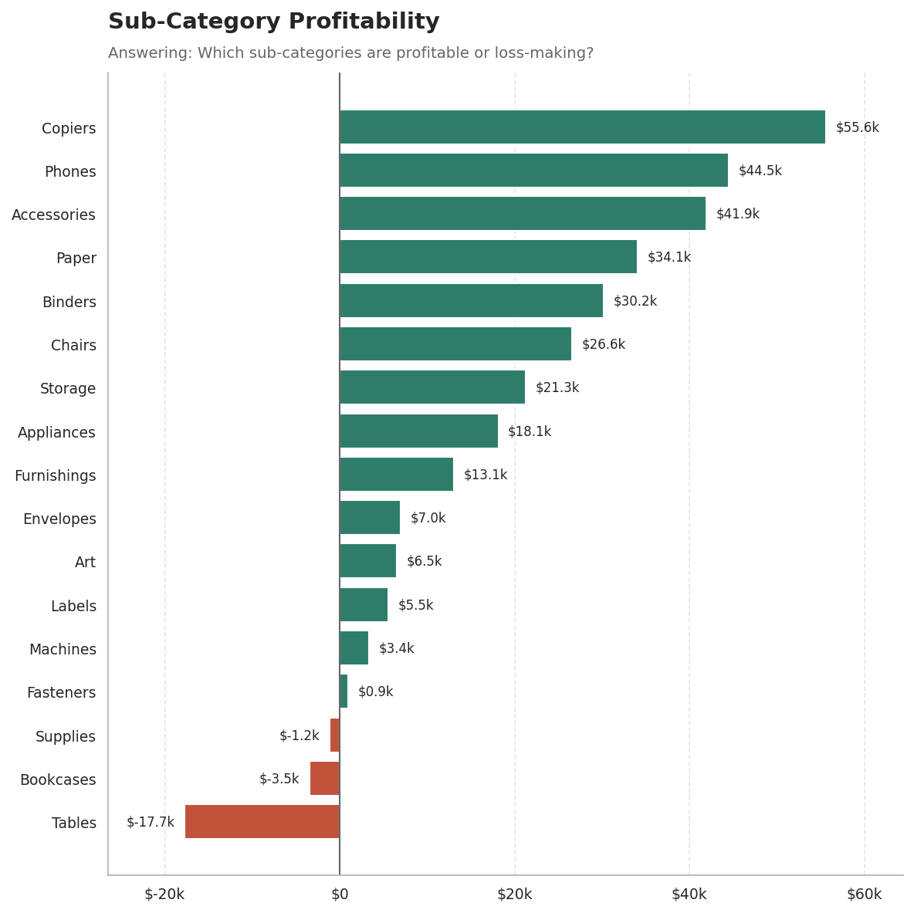
| Sub-Category | Sales | Profit | Order Count | Profit Margin |
|---|---|---|---|---|
| Tables | $207.0k | $-17.7k | 307 | -8.6% |
| Bookcases | $114.9k | $-3.5k | 224 | -3.0% |
| Supplies | $46.7k | $-1.2k | 187 | -2.5% |
| Fasteners | $3.0k | $949.52 | 215 | 31.4% |
| Machines | $189.2k | $3.4k | 112 | 1.8% |
| Labels | $12.5k | $5.5k | 346 | 44.4% |
| Art | $27.1k | $6.5k | 731 | 24.1% |
| Envelopes | $16.5k | $7.0k | 249 | 42.3% |
| Furnishings | $91.7k | $13.1k | 877 | 14.2% |
| Appliances | $107.5k | $18.1k | 451 | 16.9% |
| Storage | $223.8k | $21.3k | 777 | 9.5% |
| Chairs | $328.4k | $26.6k | 576 | 8.1% |
| Binders | $203.4k | $30.2k | 1316 | 14.9% |
| Paper | $78.5k | $34.1k | 1191 | 43.4% |
| Accessories | $167.4k | $41.9k | 718 | 25.1% |
| Phones | $330.0k | $44.5k | 814 | 13.5% |
| Copiers | $149.5k | $55.6k | 68 | 37.2% |
Does discount level appear associated with lower profitability?
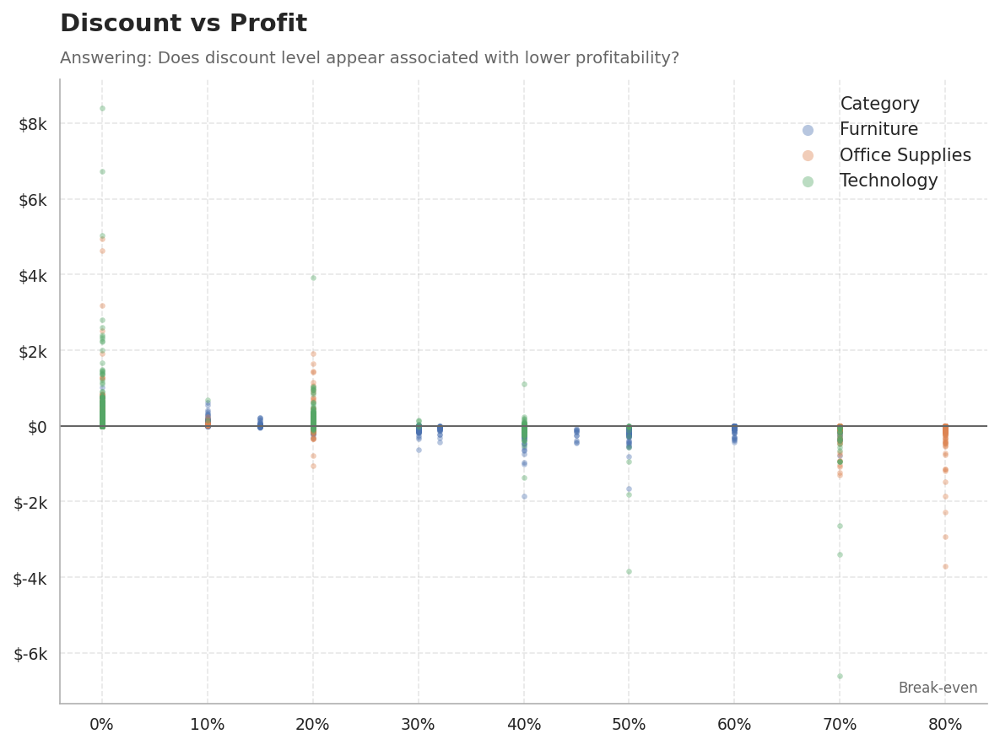
Does shipping duration differ by Ship Mode?
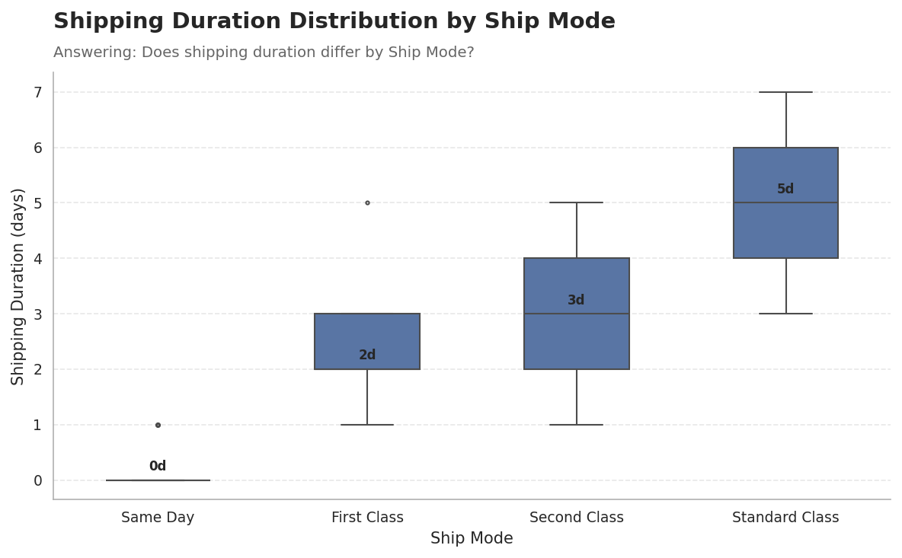
| Ship Mode | Order Count | Median | Mean | Q1 | Q3 | IQR |
|---|---|---|---|---|---|---|
| First Class | 787 | 2.0 | 2.188056 | 2.0 | 3.0 | 1.0 |
| Same Day | 264 | 0.0 | 0.045455 | 0.0 | 0.0 | 0.0 |
| Second Class | 964 | 3.0 | 3.231328 | 2.0 | 4.0 | 2.0 |
| Standard Class | 2994 | 5.0 | 5.000668 | 4.0 | 6.0 | 2.0 |
Which customer segments are most valuable?
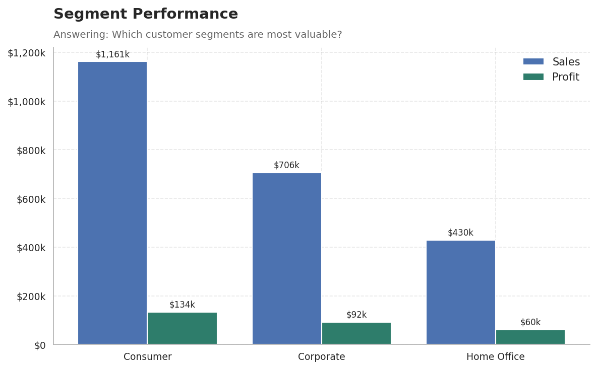
Which customers are highly valuable?
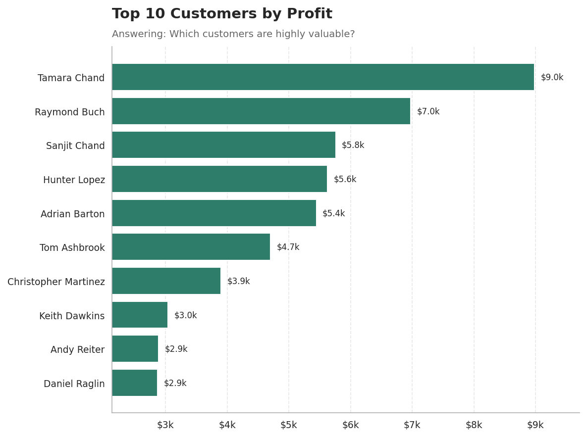
How do orders distribute across value tiers?
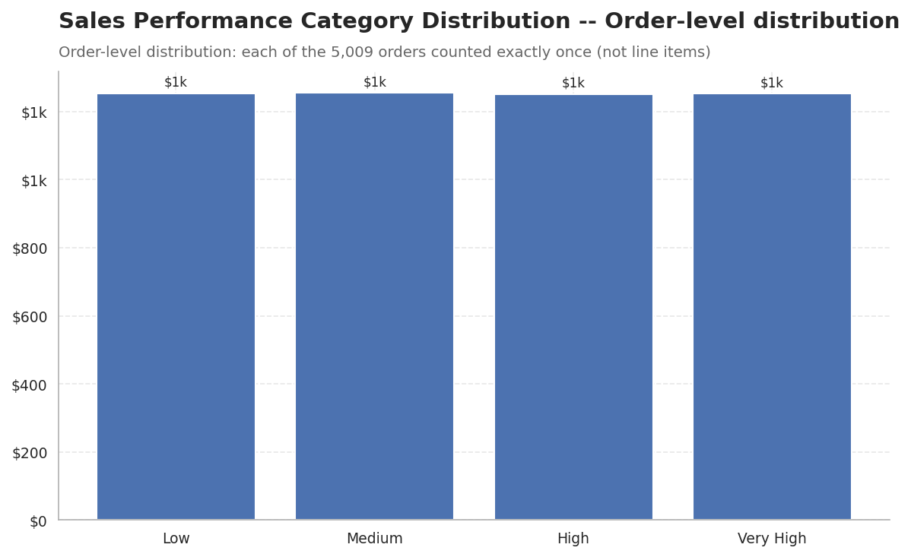
Do returns concentrate in a particular region?
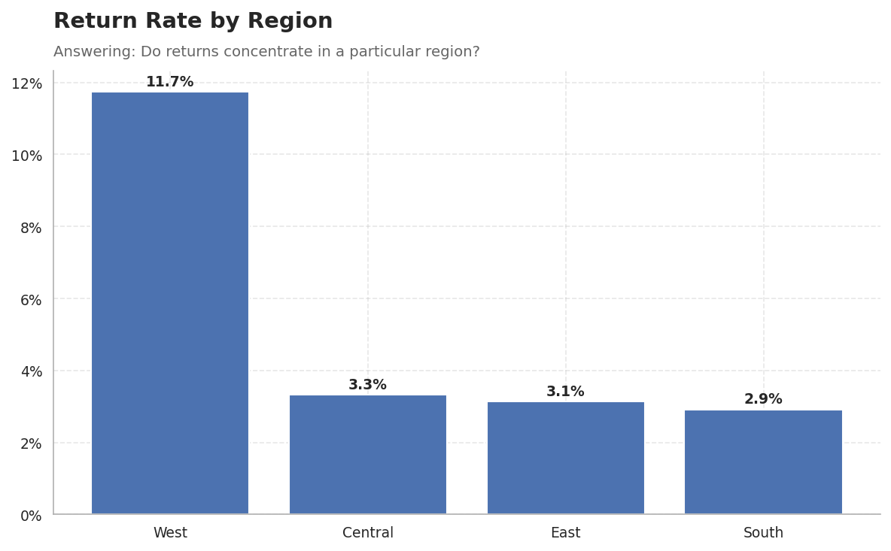
| Customer ID | Customer Name | Sales | Profit | Orders | Profit Margin |
|---|---|---|---|---|---|
| TC-20980 | Tamara Chand | $19.1k | $9.0k | 5 | 47.1% |
| RB-19360 | Raymond Buch | $15.1k | $7.0k | 6 | 46.1% |
| SC-20095 | Sanjit Chand | $14.1k | $5.8k | 9 | 40.7% |
| HL-15040 | Hunter Lopez | $12.9k | $5.6k | 6 | 43.7% |
| AB-10105 | Adrian Barton | $14.5k | $5.4k | 10 | 37.6% |
| TA-21385 | Tom Ashbrook | $14.6k | $4.7k | 4 | 32.2% |
| CM-12385 | Christopher Martinez | $9.0k | $3.9k | 4 | 43.6% |
| KD-16495 | Keith Dawkins | $8.2k | $3.0k | 12 | 37.1% |
| AR-10540 | Andy Reiter | $6.6k | $2.9k | 6 | 43.7% |
| DR-12940 | Daniel Raglin | $8.4k | $2.9k | 8 | 34.4% |
| Region | Return Rate | Returned Orders | Total Orders |
|---|---|---|---|
| West | 11.7% | 189 | 1611 |
| Central | 3.3% | 39 | 1175 |
| East | 3.1% | 44 | 1401 |
| South | 2.9% | 24 | 822 |
What is the relationship between key numeric variables?
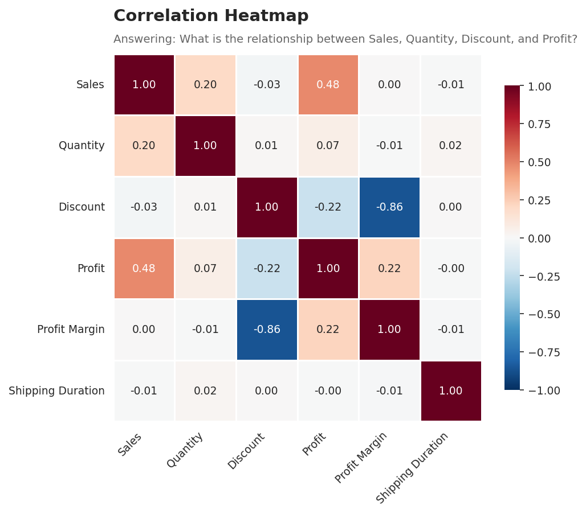
Finding: Profit grew 88.6% from 2016 to 2019, outpacing sales growth of 51.4%; overall margin rose from 10.2% to 12.7%.
Interpretation: Growth over the review period was accompanied by improving efficiency, not diluted by it.
Business Impact: The business is scaling profitably rather than trading margin for volume.
Recommendation: Continue monitoring margin alongside revenue in future periods to confirm this trend holds.
Finding: Furniture accounts for 32.3% of sales but only 6.4% of profit -- the largest revenue/profit mismatch among the three categories.
Interpretation: Furniture's sales volume does not translate proportionally into profit.
Business Impact: Management could overvalue this category if judging it on revenue alone.
Recommendation: Review pricing, discounting, and product mix within Furniture.
Finding: Tables is the largest loss-making sub-category at $-17.7k.
Interpretation: This is a concentrated, specific loss source rather than a broad category-wide problem.
Business Impact: A small number of loss-making product lines are dragging down otherwise healthy category performance.
Recommendation: Evaluate Tables for a pricing correction or assortment decision.
Finding: West leads all regions in profit at $108.4k.
Interpretation: Regional performance is not uniform across the business.
Business Impact: West's approach may hold transferable lessons for weaker regions.
Recommendation: Examine what distinguishes West's discounting and product mix from other regions.
Finding: Central shows lower profit ($39.7k) than South ($46.7k) despite higher sales ($501.2k vs $391.7k).
Interpretation: Central converts sales to profit less efficiently than South.
Business Impact: Sales volume alone is not a reliable proxy for regional profitability.
Recommendation: Compare Central and South's discount and product mix to identify the source of the margin gap.
Finding: Discount shows a strong negative association with Profit Margin (r = -0.86), far stronger than with raw Profit.
Interpretation: This is an association, not a proven causal effect, but it is consistent across the full dataset.
Business Impact: Discounting policy is a plausible lever for margin management.
Recommendation: Pilot a more conservative discount ceiling in a controlled subset before a company-wide policy change.
Finding: West shows the highest return rate at 11.7%, well above the other three regions.
Interpretation: Returns are not evenly distributed geographically.
Business Impact: If unaddressed, elevated returns in one region quietly erode the profit that region otherwise generates.
Recommendation: Investigate product mix, shipping conditions, or fulfillment quality specific to West.
Finding: Shipping duration follows the implied Ship Mode hierarchy: Same Day is fastest (median 0 days) and Standard Class is slowest (median 5 days).
Interpretation: Ship Mode labeling appears to reliably predict relative delivery speed.
Business Impact: Customers selecting a given Ship Mode can reasonably trust its relative speed positioning.
Recommendation: No corrective action indicated; continue monitoring for drift in fulfillment consistency.
Source: Sample - Superstore 2019.xls (Orders, People, Returns). Orders sheet: 9,994 rows, 21 columns, 0 full duplicates. Postal Code had 11 missing values, retained as a non-analytical field (no external ZIP imputation). Country/Region is constant (1 value) and excluded from modeling. Returns (800 rows, 296 unique Order IDs) was deduplicated to an order-level flag before a row-count-preserving left join onto Orders. All cleaning, feature engineering, and analysis steps are documented in the accompanying Jupyter notebook (notebooks/superstore_analysis.ipynb).
Performance summary: Sales grew 51.4% and profit grew 88.6% from 2016 to 2019, with overall margin improving from 10.2% to 12.7%.
Strongest profitability driver: West region profitability ($108.4k) and the $286.4k overall profit base across 5,009 orders.
Biggest profitability risk: Furniture's weak profit conversion relative to its sales share, concentrated in Tables ($-17.7k), compounded by discount levels showing a strong negative association with margin (r = -0.86).
Most important operational finding: West's return rate (11.7%) is well above the other regions, and shipping duration reliably follows the Ship Mode hierarchy from Same Day to Standard Class.
Top recommendations: